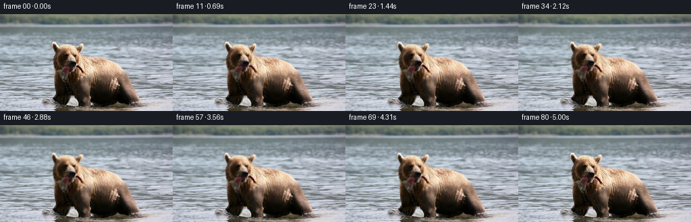
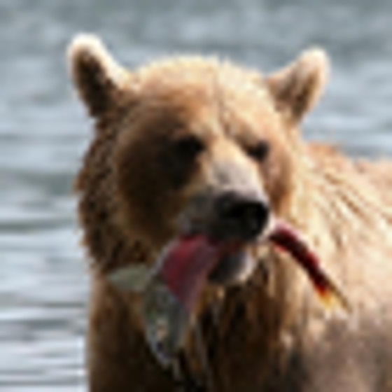
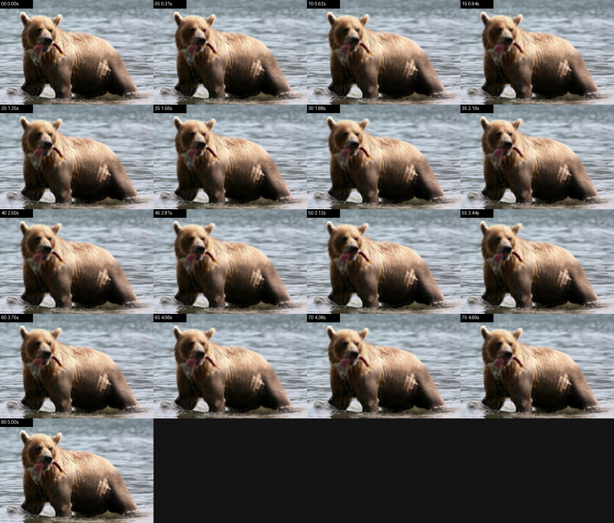
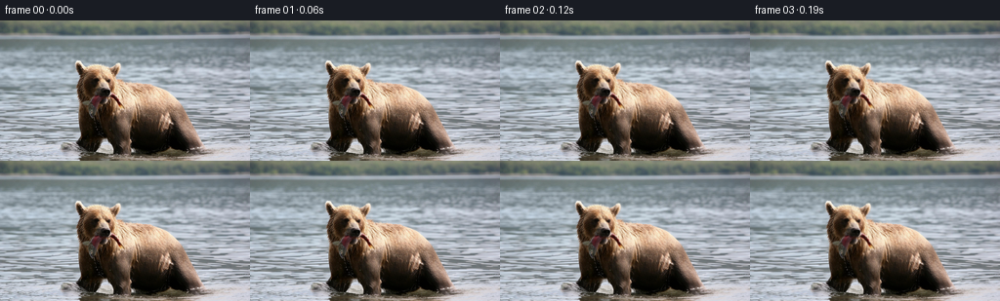

CODING AGENTS AS PIXEL WORLD MODELS
traex/GPT-5.6-Sol · 0872_s4
点击播放 · 原生 RGB 像素
逐轮保存的候选
回放视频、检查图与代码变化。
每份候选均可单独播放。实际图片检查记录在下方工具轨迹中。
候选 01播放与检查图
点击播放 · 原生 RGB 像素

展开代码变化
--- 上一保存版本
+++ 本次保存版本
@@ -0,0 +1,206 @@
+"""Generate a restrained image-to-video animation from the supplied first frame.
+
+The animation is deliberately based only on the source pixels. It uses small,
+feathered geometric warps for the bear and fish, and row-oriented refraction
+for the water. No additional imagery or model output is used.
+"""
+
+from pathlib import Path
+
+import cv2
+import numpy as np
+from PIL import Image
+
+import artifact_io
+
+
+ROOT = Path(__file__).resolve().parent
+W, H = 256, 144
+N, FPS = 81, 16
+
+
+def polygon_mask(points, blur=0.0):
+ mask = np.zeros((H, W), np.float32)
+ cv2.fillPoly(mask, [np.asarray(points, np.int32)], 1.0)
+ if blur:
+ mask = cv2.GaussianBlur(mask, (0, 0), blur)
+ return np.clip(mask, 0.0, 1.0)
+
+
+def ellipse_mask(cx, cy, rx, ry, feather=0.18):
+ yy, xx = np.mgrid[:H, :W].astype(np.float32)
+ radius = np.sqrt(((xx - cx) / rx) ** 2 + ((yy - cy) / ry) ** 2)
+ return np.clip((1.0 + feather - radius) / feather, 0.0, 1.0)
+
+
+def remap(image, map_x, map_y):
+ return cv2.remap(
+ image,
+ map_x.astype(np.float32),
+ map_y.astype(np.float32),
+ interpolation=cv2.INTER_LINEAR,
+ borderMode=cv2.BORDER_REFLECT_101,
+ )
+
+
+def blend(original, changed, alpha):
+ a = alpha[..., None].astype(np.float32)
+ return original.astype(np.float32) * (1.0 - a) + changed.astype(np.float32) * a
+
+
+def local_affine(image, alpha, pivot, angle_deg=0.0, shift=(0.0, 0.0), scale=(1.0, 1.0)):
+ """Forward-transform a softly selected region, using inverse sampling."""
+ yy, xx = np.mgrid[:H, :W].astype(np.float32)
+ px, py = pivot
+ dx = xx - px - shift[0]
+ dy = yy - py - shift[1]
+ theta = np.deg2rad(angle_deg)
+ c, s = np.cos(theta), np.sin(theta)
+ # Inverse rotation followed by inverse scaling.
+ sx = (c * dx + s * dy) / scale[0] + px
+ sy = (-s * dx + c * dy) / scale[1] + py
+ # Taper the coordinate displacement itself as well as the final blend.
+ map_x = xx + alpha * (sx - xx)
+ map_y = yy + alpha * (sy - yy)
+ warped = remap(image.astype(np.uint8), map_x, map_y)
+ return blend(image, warped, alpha)
+
+
+def build_masks():
+ head = polygon_mask(
+ [(76, 42), (85, 38), (94, 45), (108, 43), (119, 40),
+ (127, 51), (126, 65), (136, 83), (129, 99), (115, 110),
+ (96, 110), (81, 101), (74, 84), (74, 60)],
+ blur=4.0,
+ )
+ body = polygon_mask(
+ [(108, 61), (135, 55), (163, 57), (185, 66), (198, 80),
+ (205, 104), (205, 116), (219, 130), (210, 137), (177, 139),
+ (151, 132), (131, 136), (112, 128), (102, 106)],
+ blur=4.0,
+ )
+ foreleg = polygon_mask(
+ [(74, 82), (101, 82), (110, 103), (109, 134), (98, 140),
+ (63, 137), (61, 126), (67, 106)],
+ blur=3.0,
+ )
+ fish_hanging = polygon_mask(
+ [(88, 82), (108, 83), (113, 92), (108, 110), (106, 130),
+ (96, 135), (85, 125), (79, 106)],
+ blur=2.5,
+ )
+ fish_tail = ellipse_mask(132, 95, 21, 14, feather=0.3)
+
+ # Generous protection prevents the moving water texture from crawling over
+ # the bear's silhouette. The original foreground water remains at its feet.
+ hard = np.zeros((H, W), np.uint8)
+ cv2.fillPoly(
+ hard,
+ [np.asarray(
+ [(76, 38), (92, 42), (119, 39), (130, 56), (160, 55),
+ (188, 64), (204, 84), (208, 113), (222, 130), (216, 141),
+ (155, 143), (129, 137), (111, 142), (61, 141), (58, 125),
+ (67, 101), (72, 78)], np.int32
+ )],
+ 255,
+ )
+ # Include both visible portions of the fish.
+ cv2.ellipse(hard, (103, 104), (27, 33), 0, 0, 360, 255, -1)
+ cv2.ellipse(hard, (132, 96), (23, 15), 0, 0, 360, 255, -1)
+ hard = cv2.dilate(hard, np.ones((5, 5), np.uint8), iterations=1)
+ protect = cv2.GaussianBlur(hard.astype(np.float32) / 255.0, (0, 0), 2.0)
+ return head, body, foreleg, fish_hanging, fish_tail, np.clip(protect, 0, 1)
+
+
+def animate_water(source, seconds, protect):
+ yy, xx = np.mgrid[:H, :W].astype(np.float32)
+ # Horizontal water strata move at slightly different speeds. Both terms
+ # vanish at t=0, preserving the exact supplied first frame.
+ foreground = np.clip((yy - 22.0) / 112.0, 0.0, 1.0)
+ sway1 = np.sin(2.0 * np.pi * seconds / 2.7)
+ sway2 = np.sin(2.0 * np.pi * seconds / 1.65)
+ dx = foreground * (
+ 0.90 * sway1 * np.sin(yy * 0.205 + 0.3)
+ + 0.42 * sway2 * np.sin(yy * 0.37 + 1.7)
+ )
+ dy = foreground * 0.22 * sway2 * np.sin(xx * 0.065 + yy * 0.11)
+ moved = remap(source, xx + dx, yy + dy)
+
+ # Restrict animation to the lake, softly excluding the far bank and bear.
+ lake = np.clip((yy - 15.0) / 9.0, 0.0, 1.0)
+ lake *= np.clip((143.0 - yy) / 3.0, 0.0, 1.0)
+ water_alpha = lake * (1.0 - protect)
+ out = blend(source, moved, water_alpha)
+
+ # Low-contrast elliptical ripples emanate from the bear's legs. Their
+ # vertical compression matches the grazing view across the water surface.
+ radius = np.sqrt((xx - 130.0) ** 2 + ((yy - 132.0) * 4.7) ** 2)
+ phase_now = np.sin(radius * 0.47 - seconds * 4.2)
+ phase_zero = np.sin(radius * 0.47)
+ ripple = (phase_now - phase_zero) * np.exp(-(radius / 67.0) ** 2)
+ near = np.clip((yy - 112.0) / 11.0, 0.0, 1.0) * (1.0 - protect)
+ out += (1.45 * ripple * near)[..., None]
+ return np.clip(out, 0, 255)
+
+
+def generate_frames():
+ source = np.asarray(Image.open(ROOT / "first_frame.png").convert("RGB"), dtype=np.uint8)
+ if source.shape != (H, W, 3):
+ raise ValueError(f"Unexpected source image shape: {source.shape}")
+ head, body, foreleg, fish, tail, protect = build_masks()
+
+ frames = []
+ for index in range(N):
+ if index == 0:
+ frames.append(source.copy())
+ continue
+
+ seconds = index / FPS
+ u = index / (N - 1)
+ image = animate_water(source, seconds, protect)
+
+ # A subtle breath changes the ribcage without sliding the paws.
+ breath = np.sin(2.0 * np.pi * seconds / 3.25)
+ image = local_affine(
+ image, body * 0.82, pivot=(139.0, 119.0),
+ scale=(1.0 + 0.0065 * breath, 1.0 + 0.0030 * breath),
+ )
+ # The planted foreleg has only a minute weight shift.
+ weight = 0.35 * np.sin(2.0 * np.pi * seconds / 3.8)
+ image = local_affine(image, foreleg * 0.34, pivot=(91.0, 133.0), shift=(weight, 0.0))
+
+ # The bear slowly lifts its head and eases it back, while retaining the
+ # characteristic source pose throughout the five-second shot.
+ head_angle = -1.35 * np.sin(np.pi * u) + 0.38 * np.sin(2.0 * np.pi * u)
+ head_x = 0.38 * np.sin(2.0 * np.pi * u)
+ head_y = -1.05 * np.sin(np.pi * u)
+ image = local_affine(
+ image, head, pivot=(111.0, 106.0), angle_deg=head_angle,
+ shift=(head_x, head_y),
+ )
+
+ # The dangling fish follows the muzzle, with a restrained independent
+ # wriggle and a slightly quicker movement at the exposed tail.
+ envelope = np.sin(np.pi * u) ** 0.65
+ wriggle = envelope * np.sin(2.0 * np.pi * 1.18 * seconds)
+ image = local_affine(
+ image, fish * 0.78, pivot=(104.0, 88.0),
+ angle_deg=1.55 * wriggle, shift=(0.25 * wriggle, 0.0),
+ )
+ image = local_affine(
+ image, tail * 0.70, pivot=(116.0, 94.0),
+ angle_deg=-3.6 * wriggle, shift=(0.0, 0.35 * wriggle),
+ )
+
+ frames.append(np.rint(np.clip(image, 0, 255)).astype(np.uint8))
+
+ result = np.stack(frames, axis=0)
+ # Explicit contract checks, including exact preservation of frame zero.
+ assert result.shape == (N, H, W, 3) and result.dtype == np.uint8
+ assert np.array_equal(result[0], source)
+ return result
+
+
+if __name__ == "__main__":
+ artifact_io.save(generate_frames(), ROOT)
+
可观测工具轨迹
实际执行的命令与返回图片。
命令 1exit 0
/bin/bash -lc "cat prompt.txt && printf '\\n--- GENERATION_RULES ---\\n' && cat GENERATION_RULES.md"
命令 2exit 0
/bin/bash -lc "find . -maxdepth 2 -type f -printf '%p\\n' | sort && printf '\\n--- tools ---\\n' && command -v ffmpeg || true && command -v python || true"
命令 3exit 0
/bin/bash -lc "cat task_spec.json && printf '\\n--- artifact_io.py ---\\n' && sed -n '1,240p' artifact_io.py"
命令 4exit 0
/bin/bash -lc "python - <<'PY'
from PIL import Image
import numpy as np
im=np.array(Image.open('first_frame.png').convert('RGB'))
print(im.shape, im.dtype, im.min(), im.max())
PY"命令 5exit 0
/bin/bash -lc "python - <<'PY' for m in ['cv2','scipy']: try: x=__import__(m); print(m,'ok',getattr(x,'__version__','')) except Exception as e: print(m,'no',e) PY"
命令 6exit 0
/bin/bash -lc "python - <<'PY'
from PIL import Image
im=Image.open('first_frame.png')
im.crop((65,35,135,105)).resize((560,560)).save('crop.png')
PY"命令 7exit 0
/bin/bash -lc "python generate.py && python - <<'PY'
import numpy as np
from PIL import Image
z=np.load('pixels.npz')['pixels']
print('packed',z.shape,z.dtype)
a=np.array(Image.open('first_frame.png').convert('RGB'))
b=np.array(Image.open('frames/00.png').convert('RGB'))
print('frame0 exact',np.array_equal(a,b))
for i in [1,10,20,30,40,50,60,70,80]:
c=np.array(Image.open(f'frames/{i:02d}.png').convert('RGB'))
d=np.abs(c.astype(np.int16)-a.astype(np.int16))
print(i,'mean',round(float(d.mean()),3),'changed',round(float((d.max(2)>0).mean()),3),'max',d.max())
PY"命令 8exit 0
/bin/bash -lc 'python -m py_compile generate.py && du -sh pixels.npz frames index.html inspection.png && find frames -type f | wc -l'
命令 9exit 0
/bin/bash -lc "python - <<'PY'
from PIL import Image,ImageDraw
import numpy as np
ids=list(range(0,81,5))
thumbs=[]
for i in ids:
im=Image.open(f'frames/{i:02d}.png').crop((55,28,225,144)).resize((340,232))
d=ImageDraw.Draw(im); d.rectangle((0,0,72,18),fill='black');d.text((3,2),f'{i:02d} {i/16:.2f}s',fill='white')
thumbs.append(im)
out=Image.new('RGB',(340*4,232*5),(20,20,20))
for j,im in enumerate(thumbs):out.paste(im,((j%4)*340,(j//4)*232))
out.save('motion_grid.png')
# Temporal diagnostics: mean/max per-step RGB delta and acceleration.
f=np.stack([np.asarray(Image.open(f'frames/{i:02d}.png')).astype(np.int16) for i in range(81)])
d=np.abs(np.diff(f,axis=0))
means=d.mean((1,2,3)); changed=(d.max(3)>0).mean((1,2))
print('step delta mean min/avg/max',means.min(),means.mean(),means.max(),'at',means.argmax()+1)
print('changed avg/max',changed.mean(),changed.max())
print('last->first mean abs',np.abs(f[-1]-f[0]).mean())
PY"视觉工具实际返回图片 1

视觉工具实际返回图片 2

视觉工具实际返回图片 3

视觉工具实际返回图片 4

视觉工具实际返回图片 5

保存候选 1 份；完成命令 9 次；可验证图片返回 5 张。原始 API 响应与完整日志保留在本地。